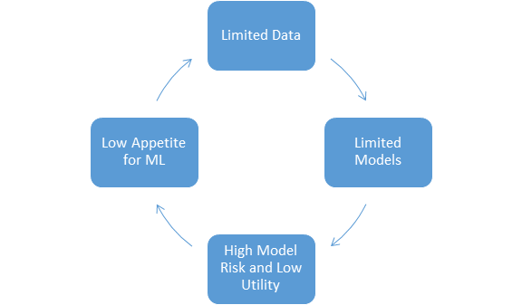
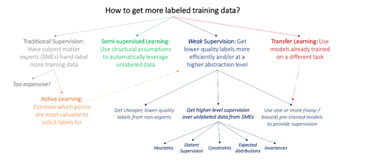

Machine learning has swept through and transformed several industries in the past decade. Financial Crime and Compliance has bucked this trend so far with incremental change the far more likely outcome than any radical transformation. Although several vendors have provided a preliminary set of ML capabilities for early adopters, the future road map for these products should address the specific challenges that prevent the wider adoption and use of these tools as well as introduce capabilities to address specific problems business users face.
In this blog post, I outline some of the challenges that militate against wider adoption of ML and how these can be potentially addressed.
Challenges
1) Data Limitations
Models are only as good as the data you feed it. This is particularly true for supervised machine learning models that are the most widely used class of models in the industry. The major obstacle that financial institutions face is that they simply don’t have reliable high quality data to train the models. The problem has two facets
a)Labels are not clean and reliable
Human experts often provide labels at a level that does not align with the requirements of specific models. For instance, most banks decision cases rather than alerts. This means the data is not fit for use for models that are to be built at an alert level. Inferring labels at an alert level from a case level introduces a lot of noise into the labels.
Further all ‘good’ alerts or cases are not equally good.The incidence of money laundering is not as clear cut as say fraud, where there is clear evidence of fraudulent behavior due to monetary loss. In AML,analysts or investigators are more likely to err on the side of caution due to the fact that the cost of false negatives is much higher than that of false positives.Therefore binary labels may not be appropriate for building models in AML.
b)Unrepresentative Training Data
Most banks haven’t been actively collecting data to support ML initiatives. The existing labelled data at banks are typically the result of rule based systems that focus on only certain regions of the population. Models trained on such limited data are typically not applicable to the entire population.
This leads to a kind of Chicken and Egg problem. Without evidence that ML models can deliver value, most banks are reluctant to embrace these approaches or invest in collecting data. However, without good data, it will be challenging to build good models.
2) Model Risk and Utility
Limitations in labels and data means that models developed using such data will likely have limitations in terms of meeting performance and model risk requirements. Given AML models are Tier 1 models in most institutions subject to the highest level of scrutiny, banks struggle with the overheads that come with deploying such a model
The requirements for deploying a model includes a thorough understanding of the weaknesses of the model and putting adequate controls in place to mitigate any risks. Documentation and continual ongoing monitoring are also challenges that banks need assistance with. Many banks are left wondering whether the benefits from deploying ML are worth the costs. It will be imperative to either reduces the costs of doing ML or engage the right levers to increase returns from ML.
3) Low appetite for a transition to ML
Most AML and Compliance teams are risk averse. To transition away from a stable system that has received regulatory approval can be a challenge. There might also be an element of the sunk cost fallacy at play here given the significant resources banks have invested to set up and monitor rule based systems.
A clear well supported path to transition from a rule based regime to an ML driven regime may be necessary to convince banks to begin this journey.

Solutions
To facilitate the adoption of ML, we need to intervene at one or more point in the cycle above. Although gathering more and higher quality data is the easy and obvious solution that would immediately increase the quality of models and the returns from ML, this is not something that can be accomplished overnight. Most banks do not have the appetite for ML to do this today. Even for banks that are willing to show initiative, efficient systems to gather data are not available.
1) Limited Models can be useful
All models are wrong but some are useful - George EP Box
Given the limitations in the data, it is to be acknowledged that building a perfect model is not possible. However, vendors can innovate to allow banks to build models that are useful and help them navigate challenges around model risk.
Below are some of the ways vendors can help banks can do this:
- Learning with Noisy Labels
There has been extensive research on how to learn with noisy labels . Vendors need to enable models that are designed to learn from noisy/inaccurate labels.
b)Make a model’s limitations explicit
OCC’s supervisory guidance on model risk management says:
An understanding of model uncertainty and inaccuracy and a demonstration that the bank is accounting for them appropriately are important outcomes of effective model development, implementation, and use. Because they are by definition imperfect representations of reality, all models have some degree of uncertainty and inaccuracy. These can sometimes be quantified, for example, by an assessment of the potential impact of factors that are unobservable or not fully incorporated in the model, or by the confidence interval around a statistical model’s point estimate. Indeed, using a range of outputs, rather than a simple point estimate, can be a useful way to signal model uncertainty and avoid spurious precision.
It is essential to understand where a model can be used with confidence. Providing the tools for a user to understand this ensures that the model is not misused - the primary concern of Model Risk and Regulators.
Vendor solutions should include models that make quantification of uncertainty explicit. This can range from something simple such as making confidence intervals and predictions intervals available for linear models or something more ambitious such as introducing Bayesian models that provide very intuitive estimates of model and prediction uncertainty.Bayesian models also mitigate the limitation of using unrepresentative data by providing wider credible intervals in regions where data is limited.
2) Enable gathering of better data and support better reporting
Once banks have the guard rails to get their ML journey started and they begin to see value in these projects, there will be a willingness to invest additional resources to gather additional data that is required to create high performing models. There has been plenty of research in how to efficiently gather label data to improve ML model performance. Some of these are summarized below.

Vendors can add value by providing solutions that allow banks to leverage one or more of these techniques to efficiently collect and label data. This will be a major driver in improving model performance.
Allowing analysts to indicate the confidence they have in a decision when they review alerts or cases is another simple functionality that can improve the quality of data.
Vendors can greatly simplify the adoption of ML models by providing accurate and comprehensive documentation that preempt any concerns or questions from Model Risk . Tooling that simplifies ongoing monitoring and detection of concept drift will help address concerns of most Model Risk departments.
Risk reporting tools that clearly tie outcomes of ML models to business KPIs can convince business stakeholders of the value of adopting ML.
3) A pathway to ML
An enterprising vendor will provide a clear well supported path for banks to make the transition from rule based systems to ML based systems. This might include partnerships where banks and vendors can leverage their respective strengths in data,domain expertise and technology to build solutions. A well defined transition plan where ML models initially coexist with rules and eventually replace rules is likely to find favor with regulators.
Vendors should collaborate with multiple banks to create a rich set of engineered, validated features. Money laundering is a challenge facing all financial institutions, it is fairly unique opportunity for banks to closely collaborate with each other and openly share their learning so as to the manage the risk associated with such a transition.
Conclusion
The journey to a strong ML driven compliance program is an iterative one requiring multiple rounds of experimentation, learning and incremental improvement. Vendors need to understand the several challenges banks face and support them at every step of this journey. Vendors who are bold enough to invest in partnerships with financial institutions and value long term success over short term profits have an opportunity to truly transform this industry.
References
- http://ai.stanford.edu/blog/weak-supervision/